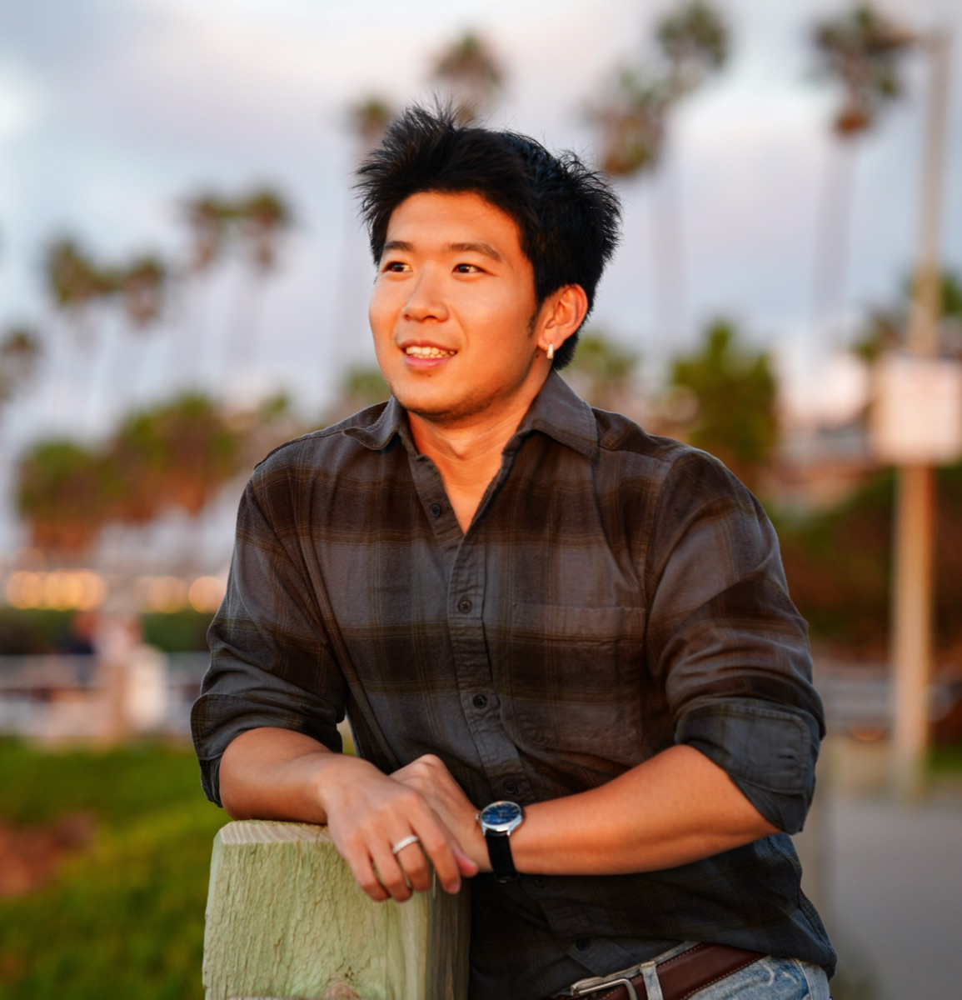
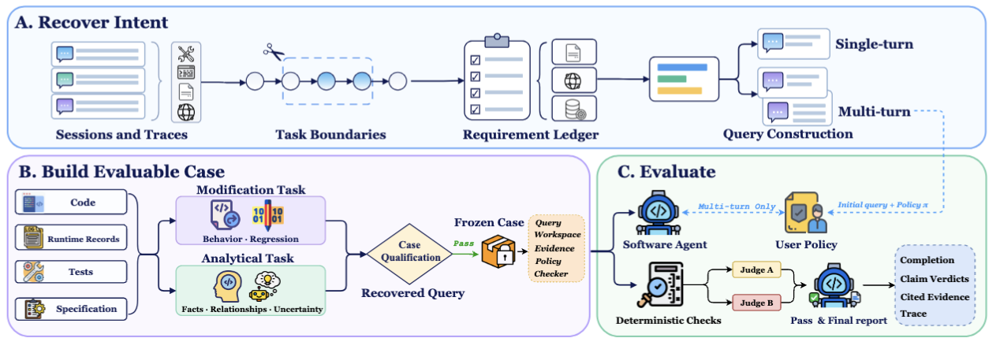
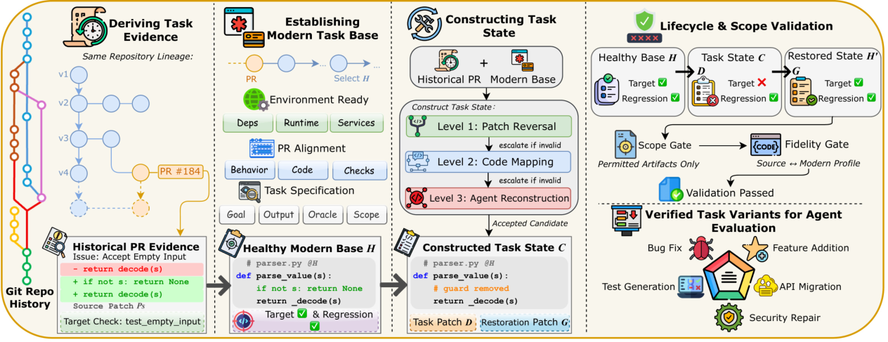
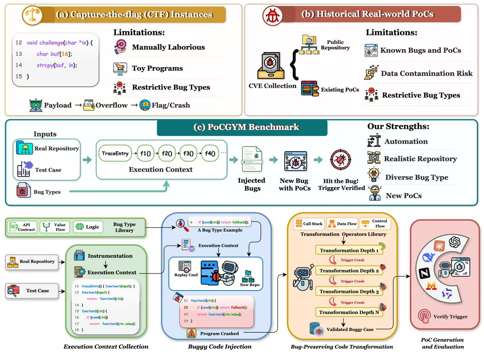
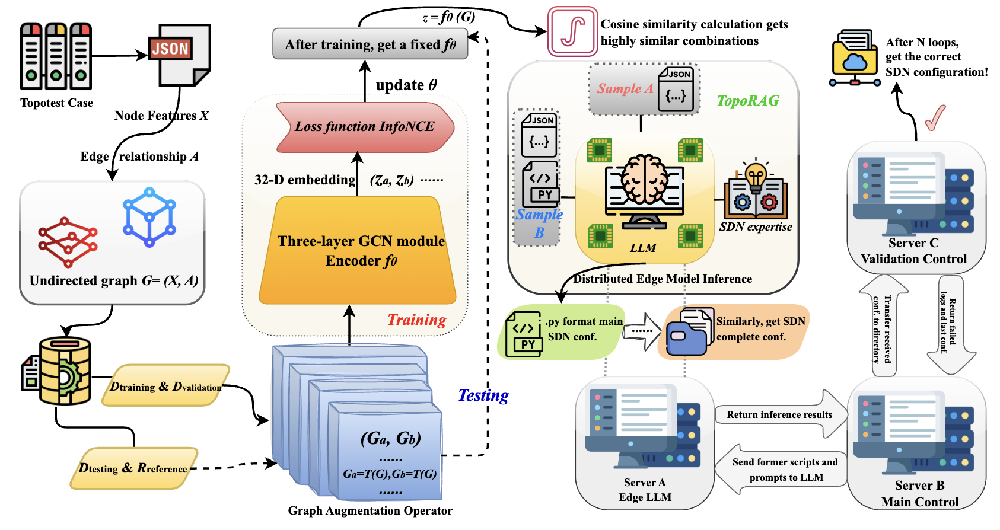
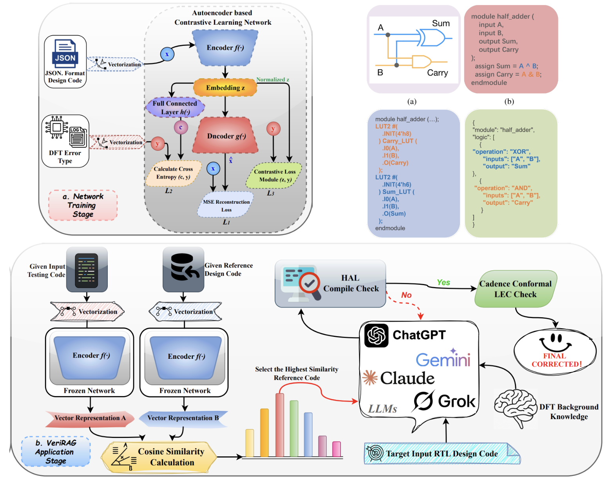
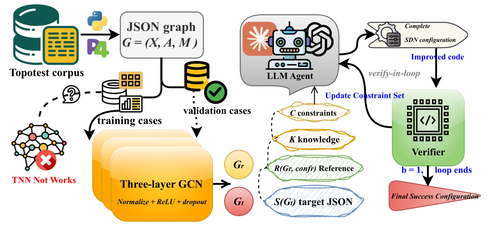
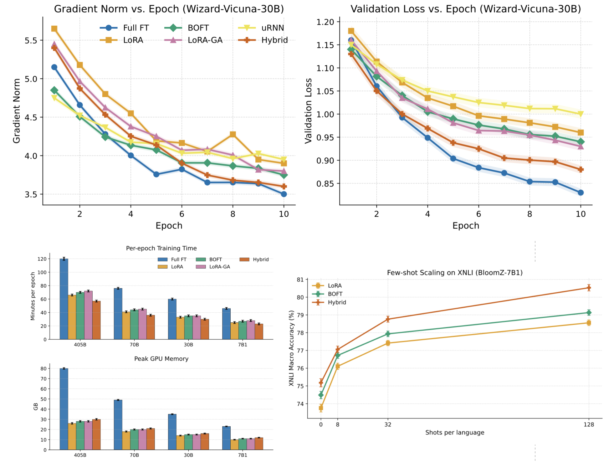
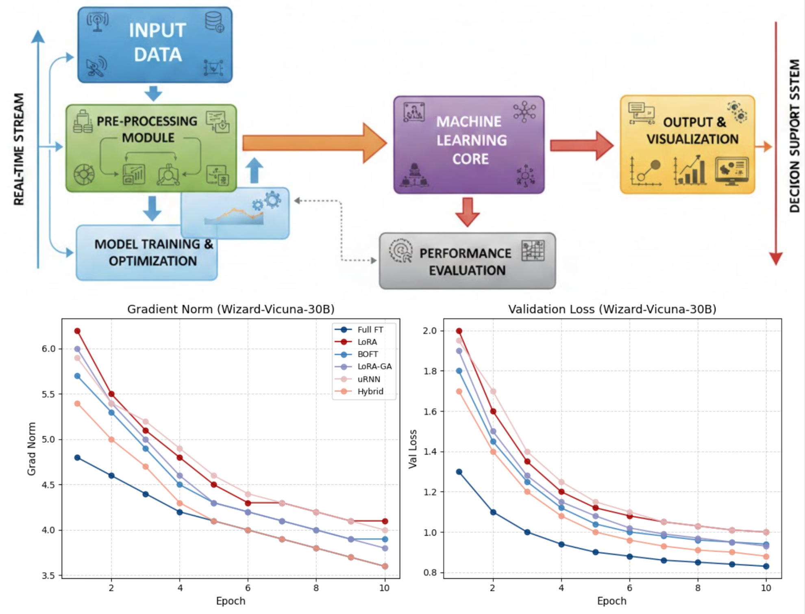
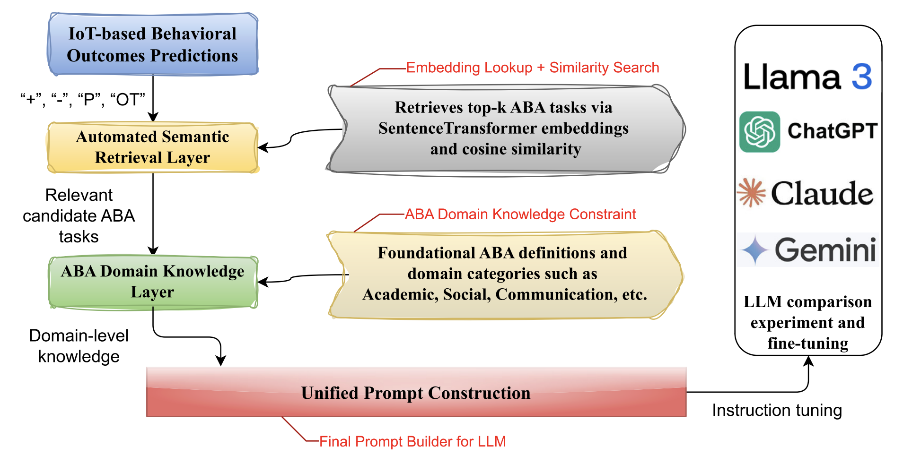

Haomin (Harmin) Qi (Chee)
I am currently a research intern at Microsoft Research Asia DKI. I am also a member of the Code Intelligence (COIN) Lab at UCLA, led by Prof. Robin Ding, and Pasta Lab. I received my master's degree from UC San Diego under the guidance of Prof. Jingbo Shang and Prof. Chengpeng Wang. Previously, I received my Bachelor's degree from CUHK, where I was advised by Prof. Soung Chang Liew and Prof. Rosanna Yuen-Yan Chan. Earlier, I began my research journey with Prof. Min-Te (Peter) Sun at NCU and Prof. Jun Wei Hsieh at NYCU, Taiwan.
As coding agents take on more of the world’s software, the question is shifting from whether they can write code to whether we can trust what they write. My research aims to make that trust earned, by grounding how agents are trained, evaluated, and verified in real execution. More specifically, my research spans three directions:
[Environment Engineering for Coding Agents] Realistic, executable environments and task corpora for coding-agent training and evaluation: SWE-SessionSift, Change2Task, and WitnessGym.
[Verifiable Code Synthesis in Loop] Retrieval, execution feedback, and automated verification for iterative code synthesis and repair: VeriRAG, GraphCue, and ABA-RAG.
[Efficient Learning for Agentic AI] Resource-efficient training and reinforcement learning strategies for AI agents: TopoEdge, Gover-Hybrid, and HU-PEFT.
Beyond these directions, I also explore LLM router for long-horizon tasks, session management for super agents, and agent RSI self-evolution.
I am currently seeking PhD opportunities starting in Fall 2027.
|

|
📣News
- Oct. 2026: At Microsoft, we released SWE-SessionSift, completing our environmental-engineering trilogy for coding agents.
- Jul. 2026: We released Change2Task, which was adopted by the Tencent Hunyuan 4 and Huawei openJiuwen teams.
- Jun. 2026: Our team released WitnessGym, a benchmark for coding-agent bug-witness construction.
- May 2026: I started my research internship at MSRA. Looking forward to seeing you in Shanghai!
🎓Education
|
|
University of California San Diego
M.S. in Electrical and Computer Engineering
2025–Present
|
|
|
The Chinese University of Hong Kong
B.S. in Mathematics and Information Engineering
2021–2025
|
|
|

|
SWE-SessionSift: Sifting Real Developer Session into Software Agent Tasks
Haomin Qi, Xingliang Wang, Siyu Chen, Xin Zhang, Yu Kang, Pengfei Gao, Qingwei Lin, Saravan Rajmohan
Preprint
|
|

|
Change2Task: From Repository Changes to Executable Coding Agent Tasks and Environments
Haomin Qi, Xingliang Wang, Xuanqi Gao, Baihui Sang, Xin Zhang, Minghua Ma, Pengfei Gao, Yu Kang, Qingwei Lin, Saravan Rajmohan, Dongmei Zhang, Qi Zhang
Preprint
Adopted by the Tencent Hunyuan 4 and Huawei openJiuwen teams
|
|

|
WitnessGym: Benchmarking Coding Agents on the Construction of Bug Witnesses
Haomin Qi, Xiangzhe Xu, Yiming Huang, Jingbo Shang, Chengpeng Wang
Preprint
|
|

|
TopoEdge: Topology-Grounded Agentic Framework for Edge Networking Code Generation and Repair
Haomin Qi, Bohan Liu, Zihan Dai, Yunkai Gao, Soung Chang Liew
IEEE Wireless Communications and Networking Conference (WCNC) 2026 Workshop (Edge-GenAI)
|
|

|
VeriRAG: A Retrieval-Augmented Framework for Automated RTL Testability Repair
Haomin Qi*, Yuyang Du*, Lihao Zhang, Soung Chang Liew, Kexin Chen, Yining Du
International Symposium on Quality Electronic Design (ISQED) 2026
|
|

|
GraphCue for SDN Configuration Code Synthesis
Haomin Qi, Fengfei Yu, Chengbo Huang
IEEE Consumer Communications & Networking Conference (CCNC) 2026
|
|

|
Governance-Aware Hybrid Fine-Tuning for Multilingual Large Language Models
Haomin Qi, Chengbo Huang, Zihan Dai, Yunkai Gao, Min-Te Sun
IEEE International Conference on Big Data (BigData) 2025
|
|

|
Hybrid and Unitary PEFT for Resource-Efficient Large Language Models
Haomin Qi, Zihan Dai, Chengbo Huang
American Journal of Computer Science and Technology
|
|

|
Transforming ABA Therapy: An IoT-Guided, Retrieval-Augmented LLM Framework
Haomin Qi, Chung-Ho Sin, Rosanna Yuen-Yan Chan, Victor Chun-Man Wong
IEEE Access
|
💼Recent Experience
|
|
UCLA
Code Intelligence Lab Research Member
Jul. 2026–Present
|

|
Microsoft Research
Research Intern
May 2026–Dec. 2026
|
|
|
UC San Diego
Shang Data Lab Research Member
Sep. 2025–May 2026
|

|
Deloitte
Machine Learning Engineer Intern
Sep. 2024–Dec. 2024
|
|
🏆Awards & Honors
|
- "ArtTouch" Champion Award, CUHK Smart Campus Solutions Competition, 2024–25
- CUHK MIE Outstanding Graduation Thesis Award, 2025
- CUHK IE Department Academic Excellence Scholarship, 2024
- HK Tech300 Entrepreneurship Award, Intell-Pro Global, 2023
- University Systems of Taiwan (UST) Summer Exchange Scholarship, 2023
- CUHK Shaw College General Education Scholarship, 2023
- CUHK Semester Exchange Scholarship, 2023
|
🤝Service
|
Reviewer
- NeurIPS 2026, AAAI (2026, 2027), WSDM 2027, WWW 2026, and KDD 2026.
- ISQED 2026, IEEE WCNC 2026, IEEE BigData 2025, and IEEE Access.
Teaching Assistant
- Spring 2025: IERG4160 – Image Processing and Visual Understanding, CUHK.
- Fall 2024: CSCI2100 – Data Structures, CUHK.
|
🌟Misc
|
|
I am passionate about fitness, skiing, and backpacking, as well as landscape photography, painting, and cooking. In my spare time, I share my life and daily moments on Instagram—feel free to follow:
instagram.com/harminchee.
|
Template is from Jon Barron's website.
Last Updated: November 2026.
|
|